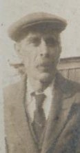
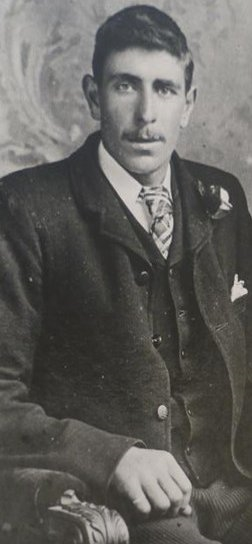
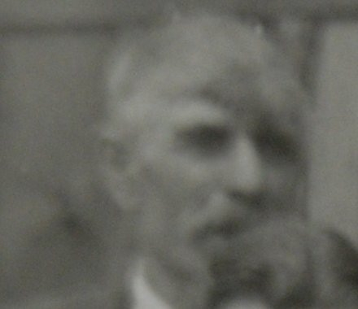
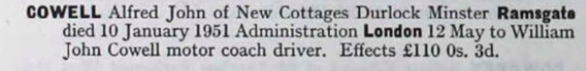
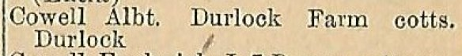
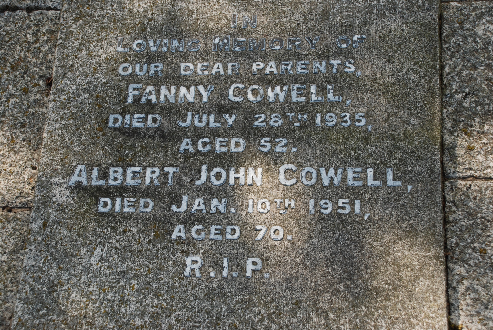
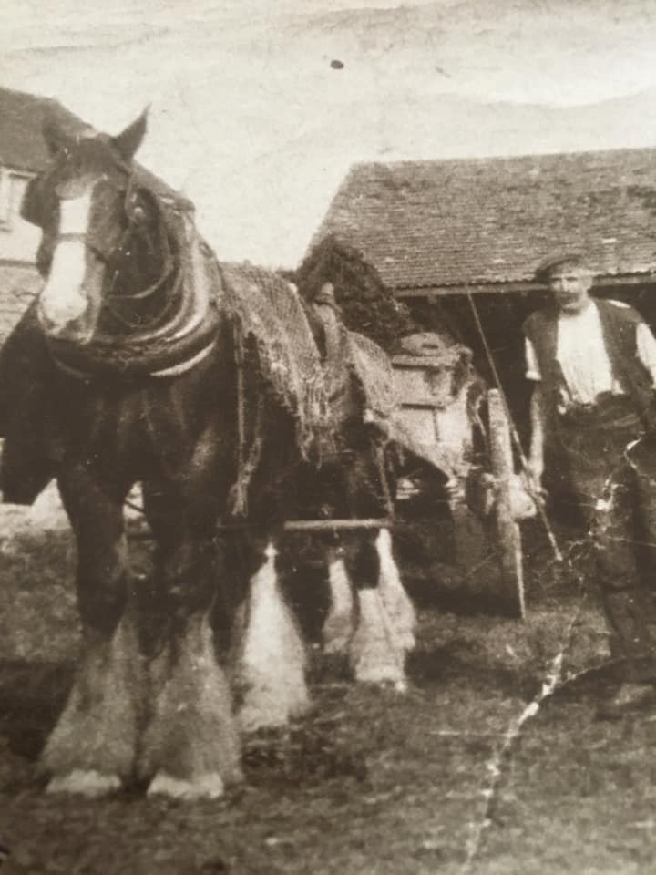
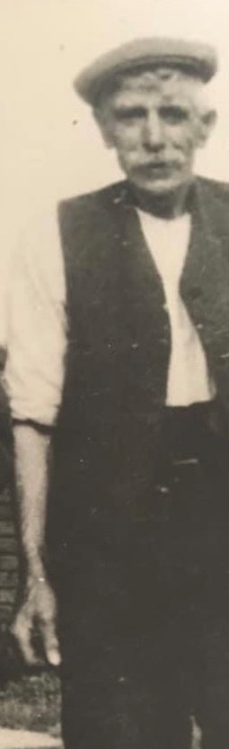
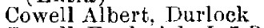

Alfred John Cowell 1880 - 1951
[ Home ] | [ Calendar ] | [ Surnames Index ] | [ Family History ]A transport driver and the son of John Cowell (a farm waggoner) and Emma Culmer, Alfred Cowell, (also known as Albert Cowell) the great-uncle of <a href="I1.html">Nigel Horne</a>, was born in Chislet, Kent, England on May 8, 1880<span class="citation">1,2,3</span>, was baptized there at St Marys on Jun 6, 1880 and married Fanny Austen (with whom he had 11 children: <a href="I300.html">William John</a>, <a href="I299.html">Edith Mary</a>, <a href="I304.html">Florence Emily</a>, <a href="I303.html">Albert Edward</a>, <a href="I302.html">Alfred</a>, <a href="I309.html">Ernest James</a>, <a href="I301.html">Annie</a>, <a href="I308.html">Winifred E</a>, <a href="I307.html">Nellie</a>, <a href="I306.html">Arthur Thomas</a> and <a href="I305.html">Daisy Ethel</a>) at St Mildred's Church, Preston, Wingham, Kent, England on Oct 13, 1906<span class="citation">5</span> (St Mildreds).</p><p>Alfred spent all of his life in Kent, England. Throughout his life, he lived in several places around the county: at Wayborough, Minster, Thanet on Apr 3, 1881<span class="citation">7</span>; in Upstreet on Apr 5, 1891<span class="citation">8</span>; at Brewery Cottages, Upper Stourmouth on Apr 2, 1911<span class="citation">9</span>; at Durlock Farm Cottages, Minster, Thanet on Jun 19, 1921<span class="citation">10</span>; and in Durlock, Minster, Thanet in 1935<span class="citation">6</span>, in 1936 and on Sep 29, 1939 following the death of his wife on Jul 28, 1935. Alfred In 1921 he was working at W Pearce (Farmer) at Durlock, Minster, Thanet, Kent, England.<p>He died on Jan 10, 1951 at Durlock, Minster, Thanet, Kent<span class="citation">4</span> (myocardial degeneration Chronic Bronchitis) and was buried at Minster Cemetery, Tothill Street, Minster in Jan 1951.
Parents
- John was born on May 17, 1858
- Emma was born on Nov 15, 1860
Children
- William John was born on Jun 8, 1909
- Edith Mary was born on Jun 20, 1910
- Florence Emily was born on Jul 7, 1911
- Albert Edward was born on Sep 8, 1912
- Alfred was born on Sep 24, 1913
- Ernest James was born on May 23, 1916
- Annie was born on May 24, 1918
- Winifred E was born c. Nov 1920
- Nellie was born on Jan 30, 1922
- Arthur Thomas was born on Jul 14, 1923
- Daisy Ethel was born on Jul 5, 1925
Citations
- 1881 England Census Online publication - Provo, UT, USA: The Generations Network, Inc., 2004. 1881 British Isles Census Index provided by The Church of Jesus Christ of Latter-day Saints © Copyright 1999 Intellectual Reserve, Inc. All rights reserved. All use is subject to the
- 1891 England Census Online publication - Provo, UT, USA: The Generations Network, Inc., 2005.Original data - Census Returns of England and Wales, 1891. Kew, Surrey, England: The National Archives of the UK (TNA): Public Record Office (PRO), 1891. Data imaged from The National
- 1911 England Census Online publication - Provo, UT, USA: Ancestry.com Operations, Inc., 2011.Original data - Census Returns of England and Wales, 1911. Kew, Surrey, England: The National Archives of the UK (TNA), 1911. Data imaged from the National Archives, London, England.
- England & Wales deaths 1837-2007 - Findmypast
- Kent, Canterbury Archdeaconry marriages 1538-1928 - Findmypast
- 1935 Kelly's Thanet Directory
- 1881 England, Wales & Scotland Census - Findmypast (was age 0 and the son of the head of the household)
- 1891 England, Wales & Scotland Census - Findmypast (was age 10 and the son of the head of the household)
- 1911 Census for England & Wales - Findmypast (was age 29 and the head of the household)
- 1921 Census Of England & Wales - Findmypast (was age 41 and the head of the household)
Notes
Used his horses to plow the land in Durlock.
Media
Albert John Cowell1

Albert John Cowell2

Albert John Cowell3

Double Wedding

Albert Cowell - Fanny Austen - marriage certificate

Albert Cowell - birth certificate

Albert John Cowell - probate

1936 Kelly's Isle of Thanet Directory

Albert John Cowell - Fanny Austen

Alfred John Cowell - 4

Alfred John Cowell - 5

1935 Kelly's Thanet Directory

Canterbury Baptisms Transcription - GBPRS-CANT-B-96111723
1939 Register Transcription - TNA-R39-1820-1820H-010-13
1911 England, Wales & Scotland Census Transcription - GBC-1911-RG14-04559-0401-3
England Births & Baptisms 1538-1975 - R_884112816
England, Births & Baptisms 1538-1975 Transcription - R_884919128
1911 Census for England & Wales - GBC/1911/RG14/04559/0401/1
Canterbury Marriages Transcription - GBPRS-CANT-M-97051089-1
England & Wales marriages 1837-2008 - BMD/M/1906/4/AZ/000087/223
England & Wales deaths 1837-2007 - BMD/D/1951/1/AZ/000306/011
England & Wales births 1837-2006 - BMD/B/1880/3/AZ/000125/289
1881 England, Wales & Scotland Census - GBC/1881/0004825237
1921 Census of England & Wales - GBC/1921/RG15/04429/0549/01
Family Tree

Generated by Ged2Site. Last updated on Jul 20, 2025